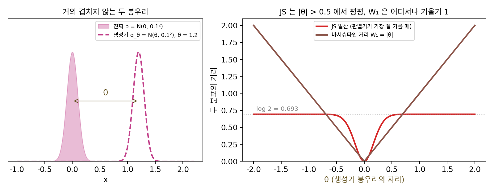

GAN: 판별기가 가르고 생성기가 속인다
맴도는 문제는 일단 접어 두고, 두 신경망을 왜 맞붙이는지부터 보자. 그림을 만드는 신경망을 학습시키려면 「이 그림이 얼마나 진짜 같은가」를 재는 손실이 있어야 한다. 그런데 그런 손실은 식으로 적을 수가 없다. 픽셀마다 정답 사진과의 차이를 재면, 수많은 정답 사진의 평균에 가까운 흐릿한 그림이 가장 좋은 답이 되어 버린다. 진짜 같은지를 가장 잘 아는 것은 진짜와 가짜를 많이 본 쪽이다. 그렇다면 손실을 식으로 적는 대신 진짜와 가짜를 가려내도록 학습한 신경망에게 맡기면 어떨까? 그때 그림을 만드는 신경망은 실제로 무엇을 줄이게 될까?
역사: 술집에서 나온 생각
2014년 몬트리올 대학의 박사과정 학생이던 이언 굿펠로(Ian Goodfellow)는 졸업한 동료를 축하하러 몬트리올 사람들이 즐겨 찾는 술집 「레 트루아 브라쇠르(Les 3 Brasseurs)」에 갔다. 그 자리에서 친구들이 사진을 스스로 만들어 내는 컴퓨터를 짜는 일을 도와 달라고 했다. 친구들은 사진의 통계를 복잡하게 분석하는 방법을 생각했는데, 굿펠로는 그 방법이 통하지 않으리라 보고 대신 신경망 둘을 맞붙이자는 생각을 냈다. 친구들이 반신반의하자 그날 밤 집에 가서 새벽까지 코드를 짰고 처음 돌린 프로그램이 바로 작동했다고, 2018년 『MIT 테크놀로지 리뷰』의 인물 기사가 전한다.
그해 6월 굿펠로와 요슈아 벤지오(Yoshua Bengio)를 비롯한 여덟 명이 「생성적 적대 신경망(Generative Adversarial Nets)」을 공개했다(신경정보처리시스템 학회 NIPS 2014). 그들은 만드는 신경망을 생성기 G, 가려내는 신경망을 판별기 D라 부르고, 판별기는 진짜에 1, 가짜에 0을 매기도록 log D(진짜) + log(1 − D(가짜))의 평균을 키우고 생성기는 같은 값을 줄이는 최소최대 문제로 적었다. 그리고 판별기가 가장 잘 가를 때 이 최소최대 값이 두 분포 사이의 어떤 거리가 된다는 것을 증명했다. 같은 논문은 걱정거리 둘도 적어 두었다. 학습 초반에는 판별기가 가짜를 쉽게 알아봐서 생성기의 손실 log(1 − D)가 포화(입력이 바뀌어도 출력이 거의 안 바뀌는 상태)해 그래디언트가 사라진다는 것, 그리고 생성기를 너무 많이 학습시키면 서로 다른 노이즈를 같은 그림 하나로 보내 버린다는 것이다. 논문은 둘째 걱정을 「헬베티카 시나리오」라 불렀는데, 지금은 흔히 모드 붕괴라 한다.
좁은 봉우리 두 개
판별기가 가장 잘 가를 때 생성기가 줄이는 값이 무엇인지 보려면, 진짜와 가짜가 모두 단순한 분포여야 한다. 진짜 분포 p를 0을 가운데로 하고 표준편차가 0.1인 좁은 봉우리 N(0, 0.1²)로, 생성기의 분포 q를 같은 봉우리를 θ만큼 옮긴 N(θ, 0.1²)로 두자. 진짜 사진들이 픽셀 공간의 아주 좁은 곳에 모여 있고, 학습 초반의 생성기가 그곳에서 멀리 떨어진 그림을 내놓는 상황을 한 줄로 줄인 것이다. 점 x에서 진짜일 확률을 가장 잘 매기는 판별기는 D(x) = p(x)/(p(x) + q(x))다. 굿펠로와 동료들은 이 판별기를 넣으면 다투는 값이 2·JS(p, q) − log 4가 된다는 것을 보였다. 여기서 JS는 두 분포 각각이 둘의 평균 분포 m = (p + q)/2에서 얼마나 다른지를 KL 발산(한 분포를 다른 분포로 어림할 때 생기는 놀라움의 차이)으로 재서 평균 낸 것이다. 그러니 생성기가 실제로 줄이는 것은 JS이고, θ를 바꿔 가며 계산하면 다음과 같다.
| θ | JS(p, q) | JS 의 그래디언트 dJS/dθ | θ만큼 옮긴 거리 |θ| |
|---|---|---|---|
| 0.05 | 0.0303 | 1.18 | 0.05 |
| 0.1 | 0.1114 | 1.99 | 0.1 |
| 0.3 | 0.5268 | 1.48 | 0.3 |
| 0.5 | 0.6759 | 0.24 | 0.5 |
| 1 | 0.693146 | 0.000022 | 1 |
| 2 | 0.693147 | 0 | 2 |
| 5 | 0.693147 | 0 | 5 |
두 봉우리가 겹치는 θ = 0.3 언저리까지는 JS가 잘 자라지만, θ = 1부터는 log 2 = 0.693147에 붙어 버린다. 1만큼 떨어져 있든 5만큼 떨어져 있든 JS는 같고, 그래서 그래디언트는 0이다. 판별기는 θ = 1일 때 진짜 점 0에 1.000000, 가짜 점 1에 0.000000을 매긴다. 판별기가 완벽하게 가를수록 생성기에게는 「어느 쪽으로 가면 진짜에 가까워지는지」라는 정보가 남지 않는다. 이렇게 진짜 분포와 가까워지도록 생성기를 학습시키면서 그 가까움을 판별기의 판정으로 재는 방법을 생성적 적대 신경망 (판별기를 속이도록 배우는 생성기 / generative adversarial network, GAN)이라 한다.
오른쪽 등식은 판별기가 가장 잘 가를 때만 성립한다. 생성기 G를 파라미터 색으로 칠한 것은 생성기의 가중치가 θ·φ 놀이의 θ 자리이기 때문이고, 판별기 D는 φ 자리라 같은 색이다.

ML에서: 겹치지 않는 두 분포
진짜 사진과 가짜 그림의 분포가 정말 이렇게 겹치지 않을까? 마르틴 아르좁스키(Martin Arjovsky)와 레옹 보투(Léon Bottou)는 2017년 1월에 「생성적 적대 신경망을 원리대로 학습시키는 방법을 향하여」를 공개했다. 그들은 진짜 사진들이 픽셀 공간 안의 훨씬 낮은 차원의 곡면 가까이에 모여 있고 생성기도 낮은 차원의 노이즈에서 그림을 만들기 때문에, 두 분포가 거의 겹치지 않는 일이 흔하다고 따졌다. 그러면 판별기는 거의 완벽하게 가를 수 있고, 좁은 봉우리의 표처럼 생성기에게 가는 그래디언트가 사라진다. 굿펠로와 동료들이 권한 처방은 생성기의 손실을 바꾸는 것이었는데, 그것으로 충분한지는 아래 문제 6에서 따져 본다.
문제 4. 너무 잘 가려내는 감식반
위조지폐범이 잉크 농도를 진짜(0)에 맞추려 한다. 지금 위조지폐 A의 잉크 농도는 1, 위조지폐 B는 30이다(단위는 마음대로). 감식반은 농도 x에서 진짜일 확률을 D(x) = sigmoid(a − b|x|)로 매긴다. (가) 아주 잘 가려내는 감식반(a = 6, b = 12)이 A와 B에 매기는 확률은? (나) 위조범이 잉크를 조금 바꿀 때 점수가 바뀌는 빠르기 |dD/dx|는 A와 B에서 각각 얼마인가? (다) 덜 날카로운 감식반(a = 0.5, b = 0.2)이면?

감식반이 깐깐할수록 위조범도 빨리 실력이 늘겠죠. 엄한 선생님한테 배우면 빨리 느는 것처럼요.

깐깐한 감식반이 B에 매기는 확률과, B의 잉크를 조금 바꿨을 때 그 확률이 얼마나 바뀌는지 계산해 볼래요?

A는 0.0025, B는 1.8 × 10⁻¹⁵⁴이에요. |dD/dx|는 A가 0.030, B는 2.2 × 10⁻¹⁵³이고요. B는 잉크를 바꿔도 점수가 사실상 0에서 꿈쩍도 안 해요. 어느 쪽으로 고쳐야 할지 알 수가 없네요.

덜 날카로운 감식반은 A에 0.574, B에 0.0041을 매기고, |dD/dx|는 A가 0.049, B가 0.00081이야. B에서도 아주 작긴 하지만 「진짜 쪽으로 가면 점수가 오른다」는 방향이 남아 있어.

그럼 감식반이 잘 가르는 것과 위조범에게 쓸모 있는 것은 같은 일인가요?

아니요. 잘 가를수록 가짜에 매기는 점수가 모두 0에 붙어서, 가까운 가짜와 먼 가짜를 구별하지 못해요. 점수가 「얼마나 먼지」를 담고 있어야 위조범이 그 점수를 따라 내려갈 수 있어요.

조교님이 과제에 「틀림」만 적고 0점을 주면, 거의 맞은 과제랑 백지 과제가 똑같이 0점이라 어디를 고칠지 모르는 거랑 같네요. 부분 점수가 있어야 고칠 방향이 보여요.
문제 5. 칸 위의 두 분포
칸 0, 1, 2, …, 6이 있고, 진짜 분포 p는 칸 0과 1에 반씩 있다. 생성기 분포 q를 p와 같은 모양으로 (가) 칸 1, 2에 (나) 칸 2, 3에 (다) 칸 5, 6에 놓을 때 JS(p, q)를 각각 구하라. 같은 경우에 q를 p 자리로 옮기는 데 필요한 「옮긴 양 × 거리」의 합도 구하라.
멀리 둘수록 더 다르니까 JS도 (가) < (나) < (다)로 커지겠지.
계산하니 (가)는 0.3466인데 (나)와 (다)는 둘 다 0.6931이에요. log 2요. 다섯 칸을 옮겼는데 두 칸 옮긴 거랑 같아요.
(나)와 (다)에서 평균 분포 m는 어떻게 생겼죠? p가 있는 칸에서 p와 m의 비를 보세요.
둘 다 칸 네 개에 ¼씩이에요. p가 있는 칸에서는 늘 p = ½, m = ¼라 비가 2고요.
그 비가 (나)와 (다)에서 다른가요?

안 달라요. 겹치는 칸이 하나도 없으면 두 분포가 어디 있든 비가 늘 2라서… JS가 log 2 하나로 같아요.
그럼 JS는 「얼마나 떨어져 있나」는 아예 안 보는 거네.

옮기는 비용은요?
(가)는 반씩을 한 칸씩 옮기니 1, (나)는 2, (다)는 5예요. 떨어진 만큼 그대로 자라요.
봉우리 표에서 |θ|가 하던 일이랑 같네.

실해석 시간에 수열이 「한 점으로 다가간다」는 걸 어느 거리로 재느냐에 따라 수렴 여부가 달라졌던 게 이런 거였어요.

카톡 단톡방에서 「읽음」만 보이면 친구가 1분 전에 읽었는지 일주일 전에 읽었는지 모르는 거랑 같네요. 겹치냐 안 겹치냐만 알려 주는 거리로는 생성기가 얼마나 가까워졌는지 못 재요.
문제 6. 포화하는 생성기 손실
판별기의 마지막 출력(로짓)을 z라 하면 D = sigmoid(z)다. 생성기가 줄이는 원래 손실 log(1 − D)와, 굿펠로와 동료들이 대신 쓰자고 한 손실 −log D를 견준다. (가) 가짜 샘플 하나에서 D = 0.5, 0.1, 0.01, 0.001일 때 두 손실을 z로 미분한 값은? (나) 두 손실은 같은 자리를 목표로 하는가? (다) 판별기가 거의 완벽할 때 손실을 바꾸면 문제가 다 풀리는가?
둘 다 D를 1로 보내려는 손실이니까 결과는 같겠죠. 어느 걸 써도 상관없을 것 같아요.
학습 초반, 판별기가 가짜를 0.001로 알아볼 때의 그래디언트를 계산해 봐요.

log(1 − sigmoid(z))를 미분하면 −D라서 −0.001이고, −log sigmoid(z)는 −(1 − D)라서 −0.999예요. 999배 차이네요. D = 0.01이면 99배, 0.1이면 9배, 0.5에서는 둘 다 −0.5로 같고요.
생성기가 못할 때일수록 원래 손실은 그래디언트가 0에 붙고, 바꾼 손실은 1 근처를 유지해. 가려는 곳은 같은데, 멀리 있을 때 얼마나 세게 끌어당기느냐가 달라.
(다)는요? 판별기가 진짜 0에 1, 가짜 1에 0을 매기는 좁은 봉우리의 경우를 떠올려 보세요. 생성기가 θ를 조금 움직이면 D(가짜)가 바뀌나요?
판별기가 가짜 근처 모든 점에 0을 매기면… θ를 조금 움직여도 D가 그대로예요.
그럼 바꾼 손실의 큰 그래디언트는 도움이 될까요?
로짓의 그래디언트에 아무리 큰 수를 곱해도 로짓이 θ에 따라 바뀌는 빠르기가 0이면 소용없어요. 손실을 바꾸는 건 sigmoid의 포화만 풀어 주고, 판별기가 매긴 점수 자체가 거리를 담지 못하는 문제는 남아요. 판별기를 바꿔야 해요.
앰프 볼륨을 아무리 키워도 원래 녹음이 무음이면 소리가 안 나는 거네요. 녹음부터 다시 해야 하고요.